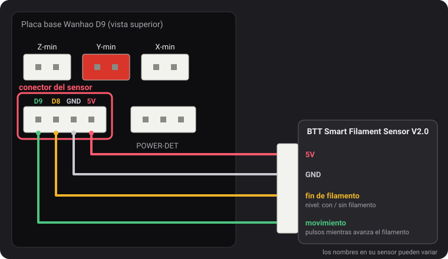
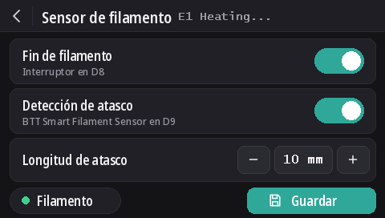

Sensores de filamento
Desde la v2.0.5, estos firmwares leen dos tipos de sensor: el interruptor de fin de filamento de Wanhao y el BTT Smart Filament Sensor V2.0, que además detecta cuando el filamento deja de avanzar (bobina enredada, atasco, filamento mordido). La detección de fin de filamento está activada por defecto en todos los modelos, y la detección de atascos está desactivada.
El conector del sensor

El conector de 4 pines a la izquierda de POWER-DET, debajo de los conectores de los finales de carrera, lleva D9, D8, GND y 5V, en ese orden. Los nombres de los pines vienen de un esquema de cableado de Wanhao que dustovich encontró y compartió en el Discord; en la parte trasera de la placa, los mismos cuatro pines están rotulados CTRL, BTN, GND y VCC.
- D8 es la entrada de fin de filamento que lee el propio firmware de Wanhao.
- D9 no la usa el firmware de Wanhao: estas compilaciones leen en ella la señal de movimiento del sensor BTT.
En la pantalla
Con DGUS Reloaded 2.0 en la pantalla (firmware v2.0.9 o posterior): Ajustes → Filamento → Sensor de filamento.
- Fin de filamento activa o desactiva toda la detección, como
M412 S1/M412 S0. - Detección de atasco activa la detección de atascos con la longitud de abajo, o la desactiva (
L0). - Longitud de atasco: − y + la cambian de 1 mm en 1 mm; toque el número para escribirlo.
- El punto Filamento se ve verde cuando el interruptor detecta filamento, y rojo cuando no.
- Los cambios se aplican al instante. Guardar los almacena, como
M500. La flecha de volver sale sin guardar: los ajustes guardados vuelven en el siguiente arranque.

Los comandos M412
Todo se configura por USB desde un terminal serie (Pronterface, el terminal de su slicer o de OctoPrint,
250000 baudios). Los parámetros se pueden combinar en un mismo comando, por ejemplo M412 S1 L10.
| Comando | Qué hace |
|---|---|
M412 | Muestra el estado, por ejemplo Filament runout ON ; Distance 5.00mm ; Motion distance 0.00mm. |
M412 S1 | Activa la detección: el interruptor de fin de filamento y también la detección de atascos si la longitud de atasco no es 0. |
M412 S0 | Desactiva toda la detección, interruptor y atascos. |
M412 D5 | Cuando el interruptor deja de detectar filamento, sigue imprimiendo 5 mm antes de pausar, para aprovechar el filamento que queda entre el sensor y la boquilla. Por defecto, 5 mm. |
M412 L10 | Activa la detección de atascos (solo sensor BTT): pausa cuando pasan 10 mm de filamento por el extrusor sin que se mueva la rueda del sensor. |
M412 L0 | Desactiva la detección de atascos y deja el interruptor de fin de filamento como está. Es el valor por defecto. |
M500 | Guarda los ajustes. Sin él, los cambios se pierden al apagar la impresora. |
M119 | La línea filament muestra TRIGGERED con filamento cargado y open sin él. |
M412 L0, y L usado solo, vienen de nuestra modificación de Marlin
(MarlinFirmware/Marlin#28585), incluida en estos firmwares. En un Marlin sin ella, L
solo se ignora y L0 pausa la impresión de inmediato como si hubiera un atasco.
El interruptor de fin de filamento de Wanhao
Indica al firmware si hay filamento. Cuando se acaba, la impresión se pausa tras 5 mm más de filamento y la pantalla inicia un cambio de filamento.
Está activado por defecto en todos los modelos desde la v2.0.8. Sin nada conectado en D8, la resistencia pull-up de la placa mantiene el pin a 5 V, lo que se lee como «hay filamento»: la detección nunca salta, así que puede quedar activada tanto si hay sensor como si no. Conecte un interruptor de fin de filamento en D8 y funciona directamente.
- La detección de atascos sigue desactivada (
L0): este interruptor no puede ver si el filamento avanza. - Para desactivar el interruptor:
M412 S0y luegoM500. - Los ajustes guardados por una versión anterior conservan su estado activado o desactivado. Para activarlo:
M412 S1y luegoM500, o vuelva a los valores por defecto (M502y luegoM500, lo que también borra el offset Z de la sonda y la malla).
BTT Smart Filament Sensor V2.0
Este sensor tiene dos salidas, y el firmware las lee de forma distinta:
- El interruptor de fin de filamento (a D8) da un nivel: 5 V mientras hay filamento, 0 V cuando se ha acabado.
- La salida de movimiento (a D9) viene de una pequeña rueda que el filamento hace girar al pasar. Cada pocos milímetros de filamento, la salida cambia entre 0 V y 5 V. El firmware solo vigila esos cambios: si el extrusor empuja la longitud de atasco sin que se produzca ni uno, el filamento no está avanzando (bobina enredada, atasco, filamento mordido) y la impresión se pausa. El interruptor de fin de filamento no puede verlo: durante un atasco, el filamento sigue ahí.
Cableado
5V a 5V, GND a GND, la señal del interruptor de fin de filamento a D8 y la señal de movimiento a D9. Los nombres impresos en el cable del sensor pueden ser distintos.
Activarlo
M412 S1 L10
M500Si las impresiones se pausan sin motivo, aumente la longitud de atasco: M412 L15 y luego M500. Para dejar solo
el interruptor de fin de filamento: M412 L0 y luego M500.
Comprobarlo
M412: Filament runout ON ; Distance 5.00mm ; Motion distance 10.00mm.M119con filamento cargado: filament: TRIGGERED. Si esa línea cambia cuando empuja el filamento a mano en lugar de cuando lo introduce o lo retira, los dos cables de señal están intercambiados: intercambie D8 y D9.
L0 nunca),
pero todavía no con el propio sensor BTT. Si el interruptor se lee al revés (open con filamento
cargado), díganoslo en Discord.Actualizar desde la v2.0.5 o la v2.0.6
Esas versiones no permitían desactivar la detección de atascos, así que usaban una longitud de atasco tan larga que nunca se alcanzara: 100 m en
la v2.0.5 (en realidad demasiado corta: más o menos un tercio de una bobina de 1 kg, tras lo cual una impresora que se quedara encendida podía pausarse sin motivo) y
10 km en la v2.0.6. Al arrancar la impresora, la v2.0.7 carga esos dos valores como L0. Una longitud real que haya ajustado
para un sensor BTT, como L10, se conserva. Desde la v2.0.4 o anterior, se carga la distancia de fin de filamento de 5 mm
en lugar del 0 que guardaban esas versiones.